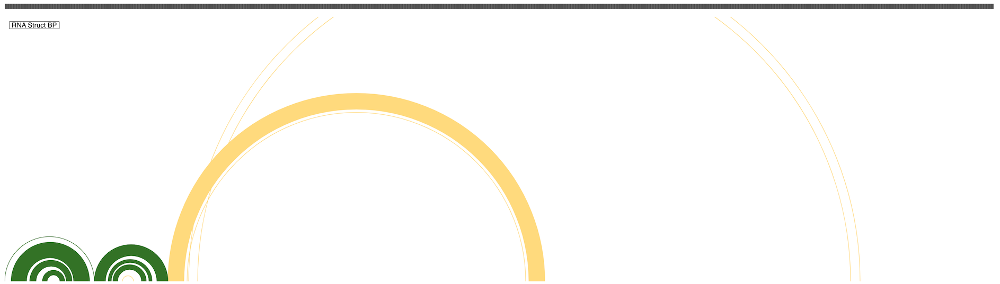

Arc Track
The arc track (type='arc') is used to visualize RNA secondary structures in arcs connecting base pairs.
Alternative structures, where one nucleotide is involved in more than one base pair, and pseudo knots, where arcs cross,
can be accommodated.
File Formats#
Data for the arc track can be input in either bp or bed format as described below.
bp#
The bp format is a tab-delimited file with 5 or 6 columns. The file begins with 1 or more optional color specification lines beginning
with the token "color:" followed by columns for red, green, and blue components and an optional description.
The color specification lines are followed immediately by data lines specifying chromosome, start & end of genomic
region of arc beginning, start & end of genomic region of arc end, and an optional color index. The color index
refers to the line number of a color specification, with 0 (zero) being the first line.
color: 255 218 125 Low-probability basepairs
color: 51 114 38 High-probability basepairs
chr1 76 76 82 82 0
chr1 105 115 334 344 0
chr1 117 117 332 332 0
chr1 118 118 545 545 0
chr1 124 124 539 539 0
chr1 1 3 55 57 1
chr1 5 15 44 54 1
chr1 17 21 39 43 1
chr1 25 28 35 38 1
chr1 58 65 97 104 1
chr1 67 69 92 94 1
chr1 70 73 87 90 1
bed#
Data for arcs between single nucleotides can be input in "bed" format with the following requirements. The file should
start with a track line which species graphType=arc, e.g. track graphType=arc. Each record line must
contain the first three columns of a bed file: chrom, start and end, where the start and end represent the base pair.
Note that the start position follows standard BED file convention and is zero-based (first base on a sequence is
position 0). The following example represent a hypothetical stem loop:
track graphType=arc
chr1 10 25 stemloop1
chr1 11 24 stemloop1
chr1 12 23 stemloop1
chr1 13 22 stemloop1
chr1 14 21 stemloop1
chr1 15 20 stemloop1
Additional examples can be found in the supplement of the following paper
Configuration Options#
| Property | Description | Default |
|---|---|---|
| arcOrientation | Orientation of arcs, one of "UP" for clockwise or "DOWN" for counter-clockwise direction. | "UP" |
Example#
{
"type": "arc",
"format": "bp",
"name": "RNA Struct BP",
"url": "example.bp"
}
